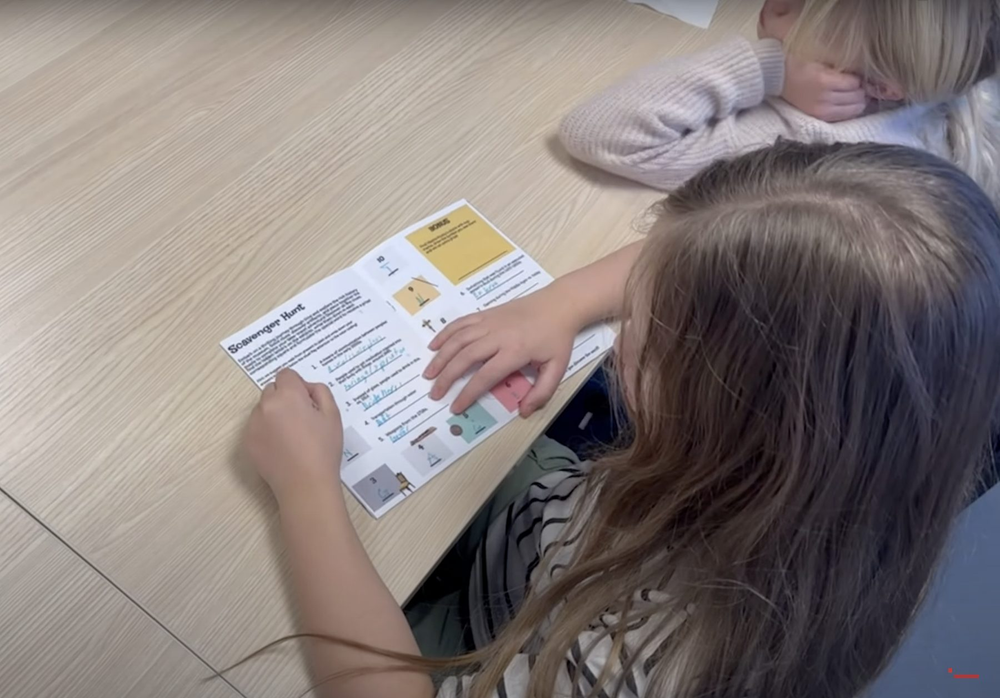

CO-DESIGN · ÖSTERGÖTLANDS MUSEUM
Engaging Explorations
A participatory design project exploring playful ways to make museum visits more engaging for younger visitors.
01 · CHALLENGE
How might a museum invite younger visitors to participate rather than only observe?
The project investigated ways to encourage exploration and interaction during a museum visit. Instead of treating visitors as passive recipients of information, the concept explored how playful activities could create a more active relationship with the museum environment.
02 · PARTICIPATORY APPROACH
Designing with people, not only for them.
Working with Östergötlands Museum, the project used co-design and participatory design approaches to explore the experience from the perspective of younger visitors. Gamified activities became a way to investigate curiosity, movement and engagement across the museum visit.

Use collaborative design activities to bring participant perspectives into the process.
Look beyond individual exhibits and consider how visitors move through the overall experience.
Use gamified interactions as prompts for curiosity and participation rather than as decoration.
03 · LEARNING
Participation changes what a designer notices.
The project strengthened my understanding of co-design as a research and design method. It showed how involving participants in the process can reveal motivations and behaviors that are difficult to understand through assumptions alone, especially when designing experiences that extend beyond a screen.